채널: 레디포그로스 (Ready For Growth) | 길이: 23:54 | 날짜: 20260228
핵심 내용
- 영상은 시작부터
72,000명규모의 성격 유형별 소득 연구를 제시하며, INFP의 평균 연소득이약 33,000달러라고 못 박는다. 이를 한국 돈으로 대략연 4,000만 원대 초반으로 환산하며,MBTI 16유형 중 최하위라는 점을 반복해서 강조한다. 비교 대상으로는1위 ENTJ 약 60,000달러를 제시해 거의9,000만 원에 가까운 수준이라고 설명한다. 첫 장면의 기능은 단순 정보 전달이 아니라, “왜 INFP만 유독 돈 문제 앞에서 뒤처지는가”라는 정서적 충격과 문제의식을 즉시 형성하는 데 있다.
- 이어서 발화자는 평균값 비교보다 더 충격적인 지표로
고소득자 비율과최저소득 구간 비율을 제시한다.30세~59세기준연 15만 달러 이상고소득자는 ENTJ가14.5%인데, INFP는4.6%에 불과하다고 말한다. 반대로연 5,000달러 미만최저소득 구간 비율은 INFP가39.2%로 제시되며, “10명 중 4명”이라는 표현으로 체감치를 높인다. 이 대목은 INFP의 소득 문제가 우연한 개인 사례가 아니라 구조적 패턴이라는 인상을 강화한다.
- 하지만 영상은 곧바로 “이건 능력의 문제가 아니다”라고 방향을 꺾는다. 발화자는 INFP가 무능해서 돈을 못 버는 것이 아니라,
뇌가 돈과 관계 맺는 방식자체가 일반적인 수익화 시스템과 어긋난다고 주장한다. 그래서 영상 전체의 핵심은의지력 부족비난이 아니라작동 방식의 불일치를 설명하는 데 있다. 즉, 문제 정의를 “실행력 부족”에서 “구조적 미스매치”로 바꾸는 것이 이 영상의 첫 번째 큰 전환점이다.
- 그 설명을 위해 영상은 INFP의 하루를 따라가는 장면을 제시한다. 아침에 인스타그램에서 동기의 셀카를 보고 웃으며 댓글을 남기지만, 폰을 내려놓는 순간 가슴이 텅 비고 “나도 열심히 사는데 뭐가 다르지?”라는 공허감이 찾아온다고 묘사한다. 점심에는 잡포털 앱에서 더 높은 연봉을 찾으려 하지만
공격적 영업,KPI 중심,성과 압박같은 문구를 보는 순간 몸이 먼저 거부 반응을 일으킨다고 말한다. 이 일상 시뮬레이션은 INFP가 돈 자체를 싫어한다기보다, 돈으로 연결되는 환경의 결이 자기와 맞지 않는다고 느낀다는 점을 보여준다.
- 점심 이후에는 동료들의
주식,ETF,부동산이야기가 이어지는데, 발화자는 INFP가 여기서 단순히 무관심한 것이 아니라고 설명한다. 오히려 “뭘 사야 하지?”, “지금 들어가도 되나?”, “이 회사는 윤리적으로 괜찮은가?”, “수익률 말고 이 기업은 뭘 하는 회사인가?” 같은 질문이 한꺼번에 떠오르며 머릿속이 흐려진다고 말한다. 다른 사람들은 숫자를 중심으로 판단하지만 INFP는 숫자 외의 층위가 너무 많이 동시에 활성화된다는 것이다. 이 설명은 INFP의 판단 지연을 무지나 게으름이 아니라과잉 다층 처리의 결과로 재해석한다.
- 밤이 되면 문제는 더 심해진다. 침대에 누워
월 300 부업,퇴근 후 수익 만들기같은 영상을 연속으로 보면서 블로그, 전자책, 흥담, 코칭 등 수많은 아이디어가 떠오르지만, 곧바로 “이걸로 정말 누군가에게 도움이 될까?”, “돈만 벌려고 하는 건 아닌가?”, “내가 진짜 하고 싶은 게 맞나?”라는 질문이 따라붙는다. 결국 영상만 저장하고 “내일은 진짜 시작해야지”라고 다짐한 채 잠들지만, 다음 날도 같은 루프가 반복된다고 한다. 이 장면은 INFP의 문제를행동력 없음이 아니라의미 검증이 끝나야만 행동할 수 있는 구조로 설명한다.
- 그래서 발화자는 일반적인 자기계발 문법, 즉
마인드셋을 바꿔라,돈에 대한 부정적 신념을 깨라,부자 마인드를 장착해라같은 조언이 INFP에게는 잘 작동하지 않는다고 비판한다. 그는 “INFP한테 돈을 사랑하라고 하는 건 채식주의자에게 고기를 좋아해 보라고 하는 것과 같다”는 강한 비유를 사용한다. 핵심은안 되는 게 아니라 뇌가 받아들이지 않는 것이라는 점이다. 즉, INFP는 돈에 대한 감각을 억지로 외재화하는 방식으로는 오래 가지 못한다는 메시지가 여기서 분명해진다.
- 영상이 제시하는 첫 번째 구조적 이유는
고소득을 예측하는 성격 특성과 INFP의 기본 성향이 정반대라는 주장이다.72,000명데이터에서 소득과 가장 강하게 연결된 특성 네 가지는야망,도전적 성향,표현력,합리적 의사결정이며, 그중야망의 상관계수는약 0.173으로 가장 높다고 말한다. 발화자는 INFP가 이 네 특성에서 전반적으로 낮은 편이라고 설명하지만, 동시에 “INFP에게 야망이 없는 것이 아니라 방향이 다르다”고 정정한다. 즉, 다른 유형의 야망이 “더 많이, 더 높이, 더 빨리”라면 INFP의 야망은 “더 깊이, 더 진정성 있게, 더 의미 있게”라는 것이다.
- 두 번째 구조적 이유는
감정과 윤리의 경보 시스템이다. 영상은2022년 전후 발표된 연구들을 인용하며,개방성과친화성이 높은 사람은 자신의 가치관과 충돌하는 일을 할 때 직업 스트레스가 유의미하게 높아진다고 설명한다. INFP가 고수익 직군에 지원하거나 돈 되는 일을 시작하려고 할 때 뇌에서 “이거 나답지 않은데?”, “이 돈은 깨끗한 돈인가?”, “내 가치가 훼손되는 건 아닌가?”라는 경보가 울리고, 그 경보가 너무 강해 몸이 먼저 멈춘다고 서술한다. 그래서 INFP는 고소득 직군에 진입하기도 어렵고, 설령 들어가더라도 오래 버티지 못한다고 영상은 결론짓는다.
- 세 번째 구조적 이유는
돈 자체가 동기 연료가 되지 않는다는 점이다. 발화자는124개 연구를 종합한 메타분석을 들어내재적 동기가 업무 성과의거의 45%를 설명하는 반면,보수나승진같은외재적 동기는약 9%밖에 설명하지 못한다고 말한다. 그리고 세상의 대부분의 수익화 시스템은 더 좋은 집, 차, 직급 같은 외적 보상을 연료로 설계되어 있는데, INFP는 거기에 시동이 걸리지 않는다고 주장한다. INFP의 진짜 연료는의미,도움,가치 일치,이 일을 통해 나는 어떤 사람이 되는가라는 질문이라고 정리한다.
- 여기서 영상은 한 번 더 반전한다. 전체 평균 소득만 보면 INFP가 최하위이지만,
연령대별 소득을 보면20대 약 2만 3천 달러,30대 약 3만 7천 달러,40대 약 5만 4천 달러로 크게 뛰며,20대에서 40대 사이 거의 2.3배가까이 오른다고 설명한다. 다른 유형은 젊을 때부터 꾸준히 상승하다가 40대쯤 성장세가 멈추는 반면, INFP는20대·30대 바닥,40대 급반전의 전형적인늦깎이 성장 곡선을 보인다고 말한다. 또한INFP, INFJ, INTJ, INTP같은 내향적 직관형 4유형은 학업이나 자기 탐색에 머무는 시간이 유의미하게 길고, INFP의학생 비율 13.7%가 높다는 점도 이 설명을 뒷받침하는 자료로 사용된다.
- 이 반전을 바탕으로 발화자는 INFP의 수익화 공식을 완전히 뒤집는다. 기존 공식이
시장이 원하는 것을 찾고, 그걸 팔아 돈을 번다라면, INFP 전용 공식은내가 진짜 가치 있다고 믿는 것을 찾고, 그것을 누군가에게 도움이 되는 형태로 번역하고, 그 도움의 대가로 돈이 들어오게 만든다는 것이다. 그는 이 공식을가치 번역 수익화라고 부르며, 돈을 직접 추격하는 것이 아니라돈이 따라오게 만드는 방식이라고 규정한다. 이 부분은 영상 전체의 가장 중요한 개념적 프레임 전환이다.
- 마지막으로 영상은 이 프레임을 실전 전술 네 가지로 구체화한다.
가치 앵커 세팅은 아침마다 “오늘 내가 누군가에게 줄 수 있는 가치는 무엇인가?”를 한 줄 적는 것이고,원포켓 수익화는 블로그·유튜브·전자책·클래스 중 하나만 골라3개월집중하는 것이다.70% 런칭은 완벽할 때까지 기다리지 말고70% 수준에서 세상에 내보내 피드백으로 나머지30%를 채우라는 원칙이며,자동 수익 흐름 설계는 예를 들어 한 달4개의 블로그 글 중 반응 좋은 글 하나를 골라3만 원짜리 전자책으로 확장하는 방식이다. 결론부에서 발화자는 INFP를가솔린 주유소밖에 없는 세상에서 충전소를 찾아야 하는 전기차에 비유하며, “당신이 돈을 못 버는 게 아니라 돈 버는 방법을 잘못 배운 것”이라고 위로하고, 동시에 이 영상이의학적 진단이나 재무상담을 대체하지 않으며 MBTI는 경향성 도구일 뿐이라고 덧붙인다.
상세 분석
영상 전반의 시각 스타일은 흑백 손그림 + 붉은 포인트 컬러다. 붉은색은 주로 경보, 가치, 반전, 수익 엔진, 충전, 핵심 수치를 표시하는 데 사용되어, 자막의 논지와 화면의 정서를 일관되게 묶어 준다.
1. 충격적인 오프닝: INFP 소득 최하위라는 선언
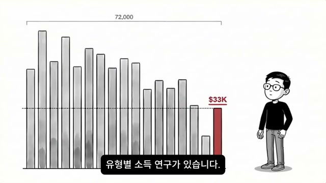
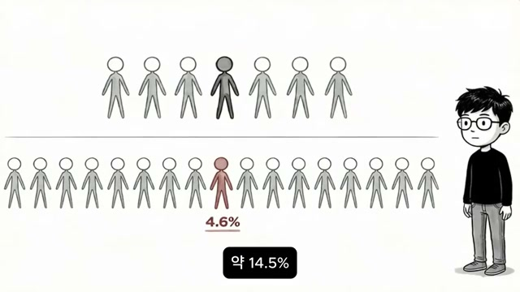
첫 장면은 72,000이라는 큰 표본 수를 그래프 상단에 먼저 제시하고, 여러 막대 중 맨 끝의 붉은 막대에 $33K를 적어 INFP의 평균 연소득을 시각적으로 찍어낸다. 오른쪽에는 안경을 쓴 캐릭터가 서 있고, 전체 그래프는 회색인데 INFP 막대만 붉게 칠해져 있어 “최하위”라는 메시지가 바로 들어온다. 다음 장면에서는 약 14.5%와 4.6%를 사람 아이콘 수열로 바꾸어 보여 주는데, 위쪽은 7명 중 1명꼴, 아래쪽은 20명 중 1명도 안 되는 꼴로 고소득자 비율 차이를 직관화한다. 발화자는 이 두 장면을 통해 “INFP는 통계적으로도 소득 구조가 불리하다”는 사실을 먼저 받아들이게 만든 뒤, 이후의 구조 분석으로 넘어간다.
2. 돈과 뇌의 관계, 그리고 아침의 공허감

발화자는 “먼저 당신의 하루를 한번 들여다볼게요”라고 말하며 추상적인 통계를 개인의 일상 감정으로 연결한다. 화면에는 머리 실루엣 안에 달러 기호가 있고, 화살표가 머리 밖으로 튕겨 나가듯 그려져 있어 돈을 받아들이지 못하는 뇌 구조라는 주제를 상징한다. 이어 그는 아침에 인스타그램에서 동기의 셀카를 보고 축하 댓글을 달지만, 폰을 내려놓는 순간 가슴이 텅 비며 “나도 열심히 사는데 뭐가 다른 거지?”라고 묻는 장면을 들려준다. 처진 자세의 캐릭터는 이런 심리 상태를 그대로 시각화하며, 영상의 논점을 소득 통계에서 정서적 체감으로 확장한다.
3. 낮의 불일치와 밤의 부업 루프
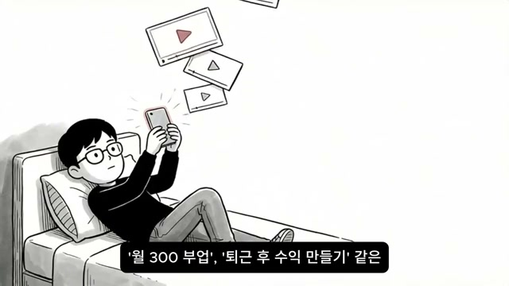
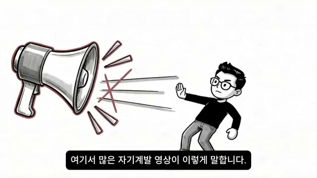
낮에는 잡포털 앱을 켜지만 공격적 영업 마인드, KPI 달성 중심, 성과 압박 환경 같은 문구를 보는 순간 “이건 내가 아니야”라고 느끼고 앱을 닫는다고 말한다. 점심에는 동료들이 주식, ETF, 부동산을 이야기하고, INFP는 관심이 없는 것이 아니라 오히려 너무 많은 층위를 동시에 생각해 판단이 멈춘다고 설명한다. 밤에는 침대에서 월 300 부업, 퇴근 후 수익 만들기 영상을 연속으로 보며 블로그, 전자책, 흥담 같은 아이디어가 떠오르지만, 곧바로 “정말 도움이 될까?”, “돈만 벌려는 건 아닐까?”, “내가 진짜 원하는 게 맞나?”라는 검열이 붙는다. 그래서 대부분의 자기계발 영상이 외치는 “마인드셋을 바꿔라”는 메시지는 INFP를 움직이기보다 밀어내고, 화면의 확성기와 캐릭터의 저항 자세가 그 부조화를 상징한다.
4. 구조적 이유 1: 고소득을 예측하는 성향과 INFP의 어긋남
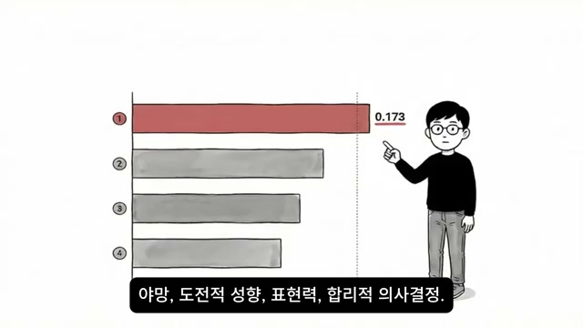
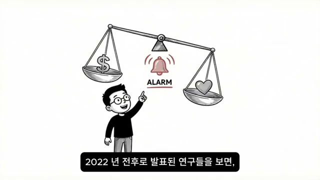
영상은 이제 왜 그런지를 뇌과학적·성격심리학적 설명으로 옮긴다. 첫 번째 이유로 야망, 도전적 성향, 표현력, 합리적 의사결정 네 가지 특성이 소득과 강하게 연결되며, 그중 야망의 상관계수가 0.173으로 가장 높다고 제시한다. 막대그래프에서는 1위 막대만 붉게 칠해져 있고 숫자 0.173이 직접 적혀 있어 이 수치가 핵심 지표임을 강조한다. 그러나 발화자는 곧바로 “INFP에게 야망이 없는 게 아니라 야망의 방향이 다르다”고 덧붙이며, 일반적 성공 추구와 INFP식 깊이·진정성·의미 추구를 대비시킨다.
5. 구조적 이유 2와 3: 윤리 경보와 외재적 보상의 무력함

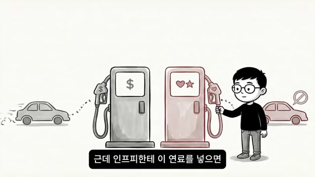
두 번째 이유는 돈을 버는 과정이 감정과 윤리의 영역을 건드린다는 점이다. 2022년 전후 연구를 인용하며, 개방성과 친화성이 높은 사람은 자신의 가치관과 충돌하는 일을 할 때 직업 스트레스가 높아진다고 말하고, INFP의 뇌는 그 경보를 특히 크게 울린다고 설명한다. 화면에서는 문턱을 지나가는 다른 사람은 아무렇지 않은 반면, INFP 캐릭터 쪽 문 위에서만 알람이 크게 울려 같은 환경도 다르게 체감한다는 점을 표현한다. 이어 세 번째 이유로 124개 연구 메타분석, 내재적 동기 45%, 외재적 동기 9%를 제시하며, 대부분의 수익 시스템이 돈·승진·소비재를 연료로 삼지만 INFP의 연료는 하트와 별로 상징된 의미라는 점을 두 개의 주유기로 대비시킨다.
6. 숨은 숫자: INFP의 연령대별 소득은 다르게 움직인다
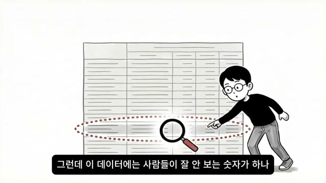
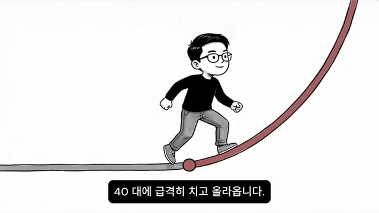
영상은 여기서 “사람들이 잘 안 보는 숫자”가 하나 더 있다고 말하며 전체 평균이 아닌 연령대별 소득을 꺼낸다. 자막에 따르면 INFP의 평균 소득은 20대 약 2만 3천 달러, 30대 약 3만 7천 달러, 40대 약 5만 4천 달러이며, 이는 20대에서 40대 사이 2.3배 가까운 상승이다. 그래프 화면은 완만한 초반부 뒤에 급하게 솟구치는 붉은 곡선을 보여 주며, 자막의 “40대에 급격히 치고 올라옵니다”라는 설명을 시각적으로 뒷받침한다. 발화자는 이 데이터를 통해 INFP가 “원래 돈을 못 버는 사람”이 아니라 늦게 시동이 걸리는 성장형이라고 재정의한다.
7. 왜 늦게 올라가는가: 자기 탐색의 시간과 40대 반전
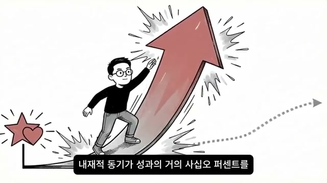
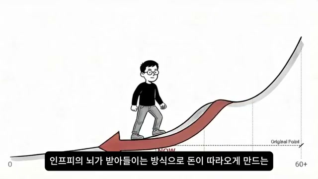
그 이유로 발화자는 INFP, INFJ, INTJ, INTP 같은 내향적 직관형 4유형이 다른 유형보다 학업이나 자기 탐색에 머무는 기간이 유의미하게 길다고 설명한다. 또 INFP의 학생 비율 13.7%를 예로 들며, 이들이 돈을 빨리 벌지 못하는 것이 아니라 자기가 진짜 하고 싶은 것을 찾는 데 더 많은 시간을 쓰는 것이라고 말한다. 화면의 하트와 별에서 출발한 큰 상승 화살표는, 한번 가치와 일이 정렬되면 내재적 동기가 폭발적으로 작동해 다른 유형이 외재적 보상으로 끌어올린 성과를 단숨에 따라잡는다는 논리를 상징한다. 그래서 문제는 INFP가 느린 것이 아니라, 이 구조를 모르고 20대와 30대에 포기해 버리는 것이라고 영상은 강조한다.
8. 가치 번역 수익화: 기존 수익 공식의 역전

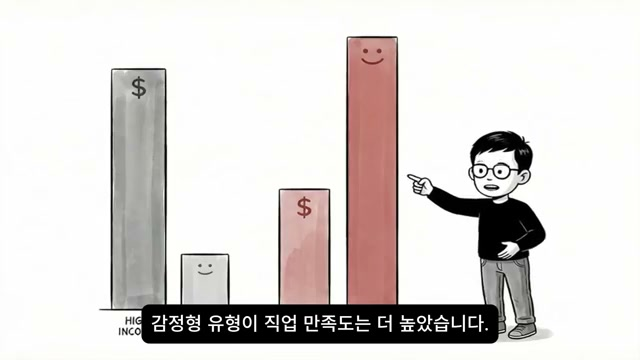
여기서부터 영상은 해결책으로 가치 번역 수익화라는 개념을 제안한다. 기존 수익 공식이 시장 수요 파악 → 판매 → 돈 획득이라면, INFP식 공식은 내가 가치 있다고 믿는 것 발견 → 누군가에게 도움이 되는 형태로 번역 → 그 도움의 대가로 돈 유입이라는 순서다. 퍼널 그림은 수많은 정보와 선택지가 가치 필터를 통과해 아래의 하트로 떨어지는 구조를 보여 주는데, 발화자는 과거에는 이것이 돈 버는 데 방해였지만 방향을 정할 때는 오히려 최고의 무기라고 설명한다. 이어 사고형은 소득이 높지만 감정형은 직업 만족도가 더 높다는 연구 결과를 통해, INFP는 돈이 아니라 가치로 직업을 선택하고, 그 가치 정렬이 높아질수록 오래 버티고 결국 성과가 뒤따른다는 논리를 완성한다.
9. 2단계 번역: INFP의 가치를 시장 언어로 바꾸는 법
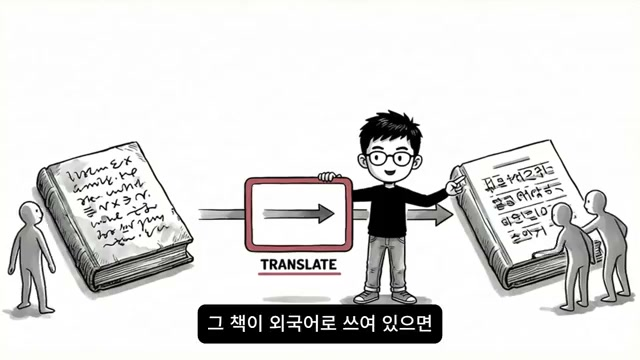
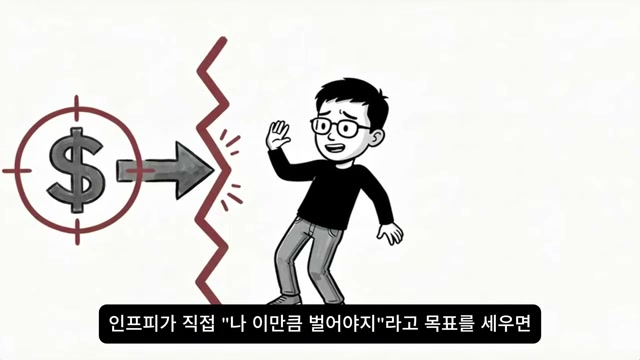
발화자는 대부분의 INFP가 가치는 있는데 번역을 못해서 막힌다고 진단한다. 외국어로 쓰인 좋은 책이 아무리 좋아도 번역되지 않으면 읽히지 않듯, INFP의 공감, 진정성, 깊이, 이해력도 시장 언어로 바뀌어야 돈이 된다는 것이다. 그래서 “나는 사람 마음을 잘 이해해요”는 고객의 감정을 읽고 신뢰를 설계하는 브랜딩 전문가로, “나는 깊이 있는 글을 잘 써요”는 사람의 마음을 움직이는 콘텐츠를 만드는 카피라이터로 번역해야 한다고 예시를 든다. 중요한 점은 내용의 본질은 그대로 두고, 표현 방식만 시장이 이해하는 언어로 바꾸는 것이지 가치 자체를 훼손하는 것이 아니라는 주장이다.
10. 3단계 설계: 돈을 목표가 아니라 부산물로 놓기
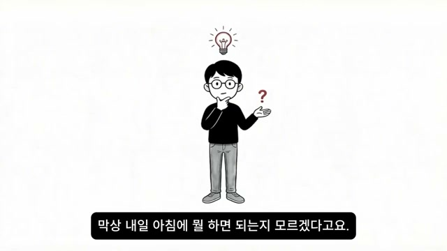
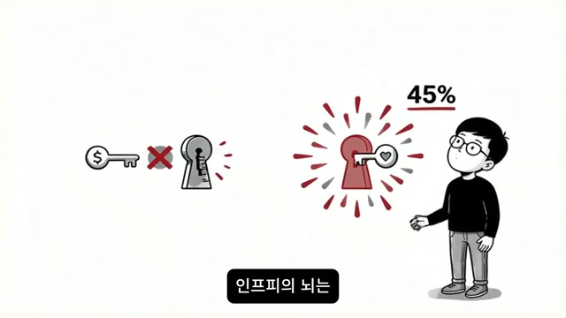
번역 다음 단계는 수익 흐름 설계다. 발화자는 INFP가 직접적으로 “나 이만큼 벌어야지”라고 목표를 세우는 순간 외부 압력으로 인식해 뇌에서 저항이 생긴다고 말한다. 대신 “내 콘텐츠가 100명에게 도움이 되고, 그중 10명이 감사의 의미로 돈을 지불하는 것은 자연스럽다”는 식으로 구조를 바꾸면, 돈은 가치 전달의 부산물로 자리 잡으면서 INFP의 가치 필터가 이를 승인한다고 설명한다. 붉게 빛나는 열쇠구멍과 45% 숫자는 바로 이 내재적 동기 엔진을 여는 핵심이 돈이 아니라 의미라는 점을 다시 상기시킨다.
11. 실전 전술 1: 가치 앵커 세팅 / 실전 전술 2: 원포켓 수익화
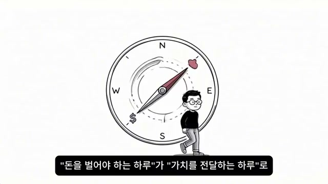
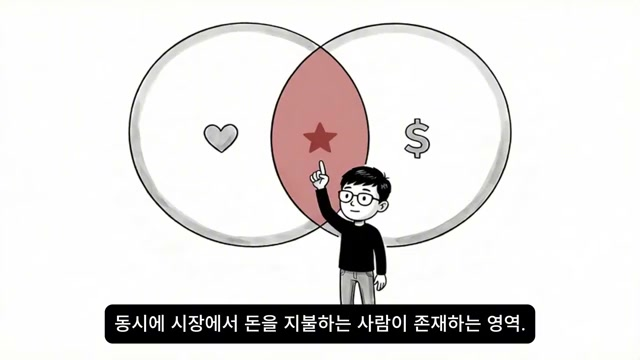
첫 번째 실전 전술은 가치 앵커 세팅이다. 매일 아침 메모장 상단에 오늘의 가치라고 적고 “오늘 내가 누군가에게 줄 수 있는 가치는 뭐지?”를 딱 한 줄 쓰라고 제안하며, 예시로 “우울할 때 내가 쓰는 회복 루틴을 인스타 스토리로 공유한다” 정도면 충분하다고 한다. 이 행동은 돈을 벌어야 하는 하루를 가치를 전달하는 하루로 전환시켜, INFP가 거부하는 목표 대신 INFP가 즉시 반응하는 목표를 전면에 놓는다. 두 번째 전술 원포켓 수익화는 블로그, 유튜브, 전자책, 클래스 같은 여러 선택지 중 하나만 골라 앞으로 3개월간 이것 하나에만 집중한다고 선언하는 것으로, 화면의 벤다이어그램은 내 가치 필터와 실제로 시장이 돈을 내는 영역의 교차점 하나를 고르라는 메시지를 시각화한다.
12. 실전 전술 3: 70% 런칭과 피드백 엔진
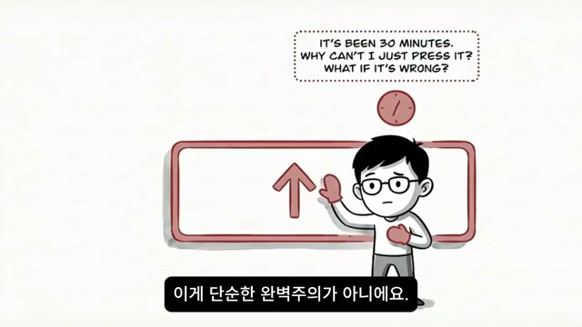
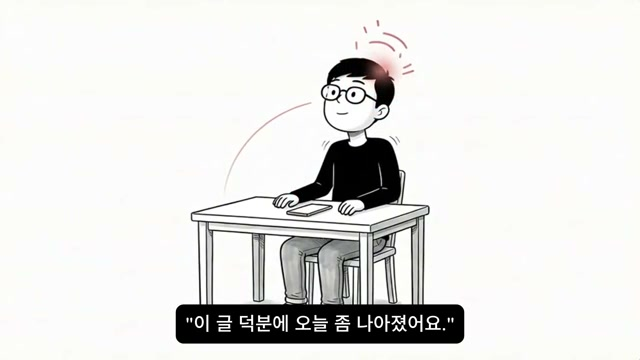
세 번째 전술은 70% 런칭이다. 발화자는 INFP가 전자책을 열 번 고치고, 블로그 글 하나를 올리기 전에 발행 버튼 앞에서 30분씩 머뭇거리는 이유를 단순 완벽주의가 아니라 진정성 훼손 공포로 해석한다. 그래서 100% 완성이 아니라 70%만 되면 내보내라고 권하며, 그 이유는 세상에 나온 결과물만이 피드백을 불러오고, 그 피드백이 나머지 30%를 채워 주기 때문이라고 설명한다. 예시로 제시되는 “이 글 덕분에 오늘 좀 나아졌어요” 같은 한 줄의 반응은 INFP의 뇌에 네가 한 일이 의미 있었다는 확인 신호가 되어, 그다음 작업을 자발적으로 밀어 올리는 내재적 동기 순환을 만든다.
13. 실전 전술 4: 자동 수익 흐름 설계
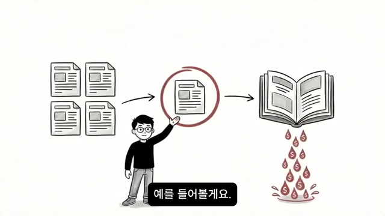
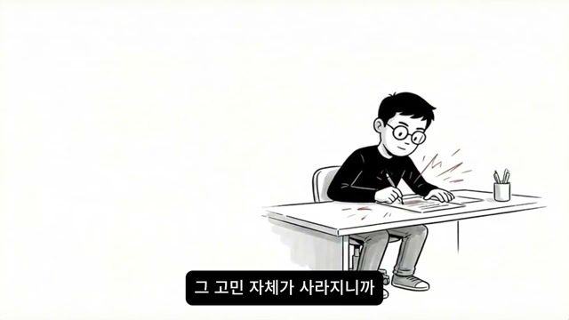
네 번째 전술은 자동 수익 흐름 설계다. 발화자는 INFP가 매번 “오늘도 돈을 벌어야 하나?”를 의식적으로 결정하면 감정과 윤리의 갈등 때문에 쉽게 지친다고 말하며, 대신 한 번 세팅해 두면 자동으로 돌아가는 구조를 만들어야 한다고 한다. 예시로 심리 관련 블로그를 운영하면서 한 달에 글 4개를 쓰고, 그중 반응이 좋은 하나를 골라 전자책으로 확장한 뒤 3만 원 가격을 붙이는 방식을 제시한다. 이렇게 되면 글을 안 쓰는 날에도 누군가가 전자책을 사고, INFP는 돈을 직접 뜯어내는 느낌이 아니라 내가 공유한 가치에 대한 감사를 받는 구조로 인식하기 때문에 저항이 줄어든다고 설명한다.
14. INFP는 느린 게 아니라 충전형이라는 최종 비유
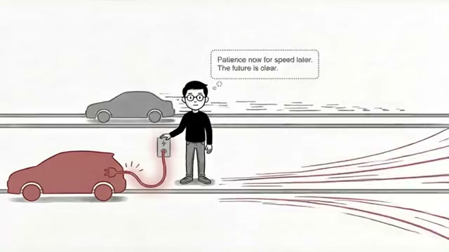
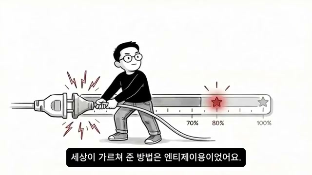
마지막 핵심 설명은 전기차 비유다. 다른 유형은 가솔린을 넣으면 바로 달리는 차이고, INFP는 충전이 필요해서 초반이 느리지만, 한번 충전이 끝나면 더 빠르게 가속하는 전기차라는 것이다. 화면에도 붉은 전기차가 충전 중이고 말풍선에는 Patience now for speed later. The future is clear.라는 문구가 떠 있어, 지금의 정체는 실패가 아니라 미래 가속을 위한 준비 시간이라는 메시지를 전달한다. 이어 70%, 80%, 100% 눈금이 있는 계기판 옆에서 스스로 플러그를 뽑아 버리는 장면을 보여 주며, 많은 INFP가 거의 다 충전된 상태에서 “나는 원래 현실적인 사람이 아니야”, “돈이랑 안 맞아”라고 결론내리고 포기해 버린다고 경고한다.
15. 최종 메시지: 너의 연료는 의미이며, 잘못은 네게 있지 않다
영상의 마지막 문장은 위로와 권유로 구성된다. 발화자는 남의 연료를 억지로 넣지 말라, 당신의 연료는 의미다, 그 의미를 찾고 번역해 세상에 내보내면 돈은 따라온다고 말하며, 주변에 돈 앞에서 위축되는 INFP가 있다면 이 영상을 보내 달라고 부탁한다. 그 이유는 그 사람에게 지금 가장 필요한 한마디가 “너 잘못이 아니야”일 수 있기 때문이라고 보기 때문이다. 그리고 끝에서 이 영상이 연구 데이터를 바탕으로 제작되었지만 의학적 진단이나 재무상담을 대신하지 않으며, MBTI는 경향성을 보여 주는 도구일 뿐 개인 결과는 다양한 요인에 따라 달라질 수 있다고 선을 긋는다.
주요 인용 및 발언
“이건 능력의 문제가 아닙니다.”
“당신의 뇌가 돈과 관계 맺는 방식 자체가 다른 겁니다.”
“인프피한테 돈을 사랑하라고 말하는 건 채식주의자한테 고기를 좋아해 보라고 하는 거랑 똑같아요.”
“인프피의 야망은 방향이 달라요.”
“다른 유형의 야망이 더 많이, 더 높이, 더 빨리라면 인프피의 야망은 더 깊이, 더 진정성 있게, 더 의미 있게거든요.”
“인프피의 연료는 의미거든요.”
“세상에 수익화 시스템이 당신의 뇌와 안 맞는 거예요.”
“가솔린 엔진용 주유소밖에 없는 세상에서 전기차를 몰고 있는 셈이에요.”
“돈을 목표로 놓는 게 아니라 가치 전달의 부산물로 놓는 거예요.”
“100% 완성이 아니라 70%만 되면 내보내는 겁니다.”
“피드백이 나머지 30%를 채워줍니다.”
“인프피는 느린 게 아니에요. 충전하는 데 시간이 걸리는 거예요.”
“당신이 돈을 못 버는 게 아니에요. 돈 버는 방법을 잘못 배운 거예요.”
“너 잘못이 아니야.”
결론 및 시사점
이 영상의 핵심 메시지는 단순하다. INFP는 돈을 못 버는 유형이 아니라, 돈을 벌게 만드는 일반적인 시스템과 자기 뇌의 작동 방식이 서로 맞지 않는 유형이라는 것이다. 그래서 해결책도 “더 독하게”, “더 야망 있게”, “더 돈을 사랑하게”가 아니라, 의미를 연료로 쓰고, 가치를 시장 언어로 번역하고, 과잉 선택을 줄이고, 완벽 이전에 세상에 내보내고, 한 번 설계하면 자동으로 굴러가는 구조를 만드는 것으로 제시된다.
설득 방식도 흥미롭다. 영상은 먼저 INFP 소득 최하위라는 충격적인 데이터로 자책을 유도한 뒤, 곧바로 그것을 구조적 미스매치로 재해석해 죄책감을 완화한다. 그 다음 전기차, 주유기, 알람, 번역, 퍼널, 70% 게이지 같은 쉬운 비유로 추상적인 심리·동기 구조를 반복해서 설명하고, 마지막에는 실제 행동 지침 4개와 너 잘못이 아니야라는 정서적 위로로 마무리한다. 즉 이 영상은 통계, 자기이해, 정체성 위로, 실전 행동 전략을 한 흐름으로 묶어, INFP 시청자가 자책 대신 자기 맞춤형 수익 구조 설계로 사고를 전환하도록 설계된 콘텐츠라고 볼 수 있다.
댓글
GitHub 이슈 기반 댓글 시스템입니다.